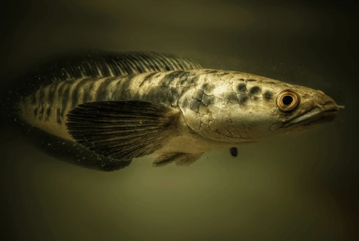
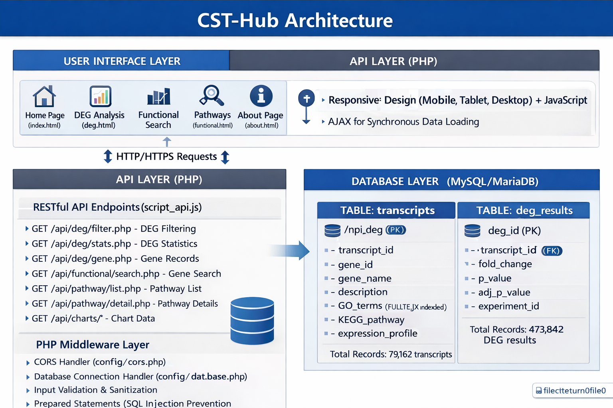

Channa striata Transcriptomics Hub
A comprehensive transcriptomics resource providing access to genome-wide gene expression data of Channa striata. Discover genes associated with reproduction, growth, nutrition, and disease resistance.

About Channa striata (Striped Murrel)
A commercially important freshwater fish species of South and Southeast Asia
Taxonomy & Classification
| Kingdom | Animalia |
| Phylum | Chordata |
| Class | Actinopterygii |
| Order | Anabantiformes |
| Family | Channidae |
| Genus | Channa |
| Species | C. striata (Bloch, 1793) |
Common names: Striped Snakehead, Striped Murrel, Chevron Snakehead, Snakehead Murrel
General Biology & Habitat
Channa striata is a freshwater predatory fish native to South and Southeast Asia. It is widely distributed across India, Pakistan, Bangladesh, Sri Lanka, Nepal, Myanmar, Thailand, Malaysia, and Indonesia. The species inhabits a variety of freshwater habitats including rivers, lakes, swamps, ponds, canals, and rice paddies.
It possesses an elongated, cylindrical body with a flattened, snake-like head that gives it the name "snakehead." The body is dark brown to olive-green dorsally with irregular dark blotches and chevron-shaped bands along the flanks. Adults typically reach 30–90 cm in length and can weigh up to 3–4 kg.
A remarkable feature of C. striata is the presence of a suprabranchial (accessory breathing) organ, which enables it to breathe atmospheric air. This adaptation allows the fish to survive in oxygen-depleted waters and even traverse short distances over land between water bodies.
Reproductive Biology
Breeding Season
C. striata is a seasonal breeder with peak spawning activity during the monsoon months (June–September in India). Spawning is triggered by rising water levels, rainfall, and associated environmental cues. The species typically breeds once per year in natural conditions, though multiple spawning events have been reported in aquaculture settings under induced breeding protocols.
Fecundity & Spawning
Females attain sexual maturity at 1–2 years of age (approximately 20–25 cm total length). Fecundity ranges from 2,000 to 30,000 eggs depending on the size of the female. The eggs are non-adhesive, buoyant (due to oil globules), and float on the water surface. Egg diameter ranges from 1.2–1.6 mm, and hatching occurs within 24–48 hours at 26–30°C.
Parental Care
A distinctive feature of C. striata is its remarkable parental care behaviour. Both parents guard the eggs and newly hatched larvae at the water surface. The male is particularly aggressive in protecting the nest. Parental care continues for 2–4 weeks until the fry become independent and free-swimming, which significantly improves larval survival rates.
Gonadal Development
The gonadal development cycle follows five maturation stages: immature, developing, maturing, ripe/spawning, and spent. The gonadosomatic index (GSI) peaks during the pre-spawning and spawning months (May–August). Hormonal regulation involving the hypothalamic-pituitary-gonadal (HPG) axis plays a key role in gonadal maturation, with GnRH, FSH, LH, and steroid hormones orchestrating the reproductive cycle.
Production & Aquaculture Importance
Economic Significance
Channa striata is one of the most economically valuable freshwater fish species in Asia. It commands a premium market price due to its firm, white, boneless flesh and excellent taste. In India, it is considered a high-value food fish and fetches prices significantly higher than major carps. It contributes substantially to inland fisheries and is a key species for food security in rural households.
Culture Practices
Aquaculture of C. striata has been gaining momentum across South and Southeast Asian countries. Culture is practised in earthen ponds, cement tanks, cages, and biofloc systems. The species adapts well to intensive culture conditions due to its air-breathing ability and tolerance to poor water quality. Stocking densities of 10,000–50,000 fingerlings/ha with supplementary feeding using trash fish or formulated pellets yield productions of 3–8 tonnes/ha/year.
Growth Performance
C. striata exhibits rapid growth under favourable culture conditions. It can attain 500–800 g in 8–12 months of culture. Growth is influenced by stocking density, feed quality, water temperature, and management practices. The species is a carnivorous feeder, naturally preying on smaller fish, crustaceans, insects, and molluscs. In aquaculture, it can be weaned onto formulated diets with protein levels of 40–50%.
Nutritional & Medicinal Value
The flesh of C. striata is rich in essential amino acids (especially glycine and proline), polyunsaturated fatty acids (PUFAs including omega-3 and omega-6), and minerals (zinc, iron, calcium). It is traditionally used in many Asian countries for wound healing and post-surgical recovery. Scientific studies have confirmed the presence of bioactive compounds such as arachidonic acid and albumin that promote tissue repair and reduce inflammation.
Research Significance & Challenges
Key Challenges
- Declining wild populations due to overfishing and habitat degradation
- Limited availability of quality seed/fingerlings for aquaculture
- Cannibalistic behaviour, especially in larval and juvenile stages
- Susceptibility to diseases such as Epizootic Ulcerative Syndrome (EUS)
- Lack of selective breeding programmes for growth improvement
Why Transcriptomics?
Transcriptomic studies in C. striata are crucial for understanding the molecular mechanisms underlying reproduction, growth, immunity, and stress responses. Gene expression profiling helps identify candidate genes and pathways associated with economically important traits, enabling marker-assisted selection, improved broodstock management, and development of disease-resistant strains. The CST-Hub database aims to serve as a centralised resource for all such transcriptomic data to accelerate genomics-driven aquaculture improvement of this prized species.
Database Features
Explore the comprehensive transcriptomics tools and resources available in CST-Hub
DEG Analysis
Explore differentially expressed genes across various tissues and conditions. Visualize LogFC and P-values.
Explore DataPathway Analysis
Detailed information about metabolic pathways, gonadal development, and breeding characteristics.
View PathwaysFunctional Search
Search for specific genes, GO terms, or annotations to find relevant biological information.
Start SearchingAbout The Project
Advancing aquaculture through genomic research

Transcriptomics Resource for Striped Murrel
The CST-Hub is a pivotal transcriptomics resource for researchers studying the striped murrel (Channa striata). It provides gene expression profiles across reproductive, nutritional, and disease-associated pathways.
- Growth & Metabolism Genes
- Reproductive Physiology
- Disease Resistance Markers